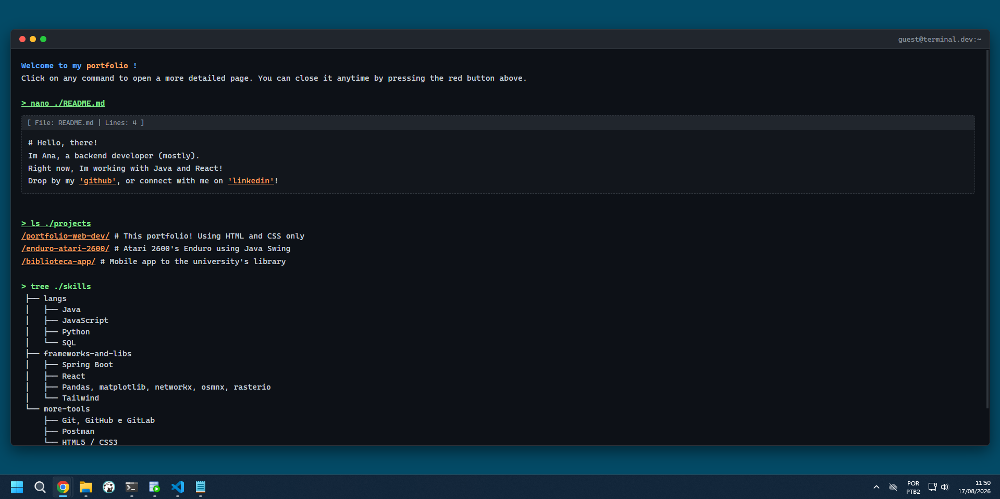
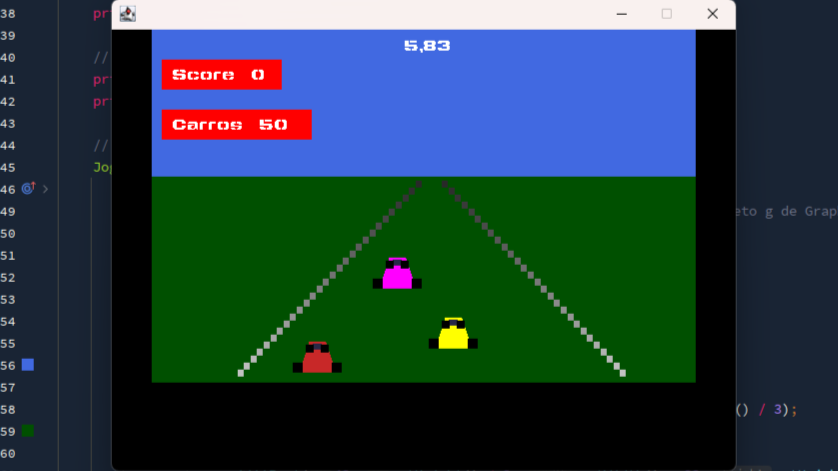
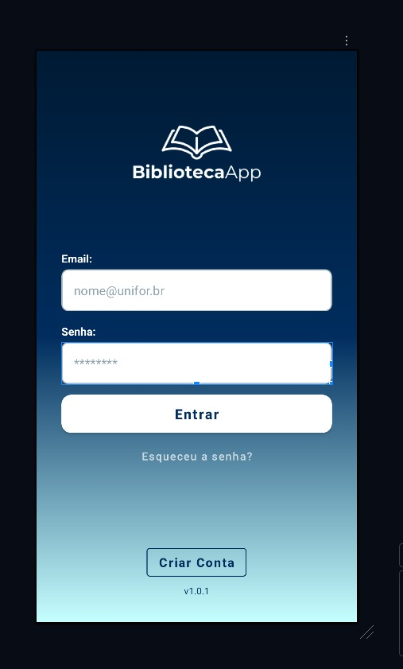
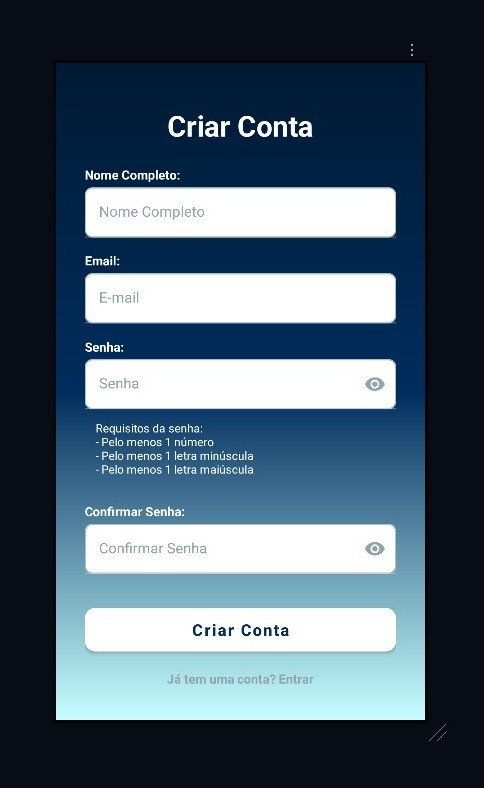
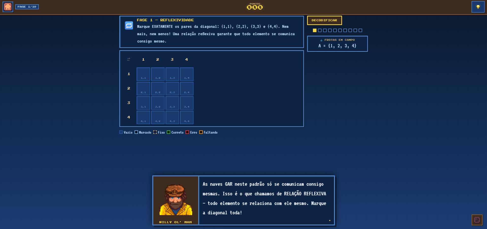
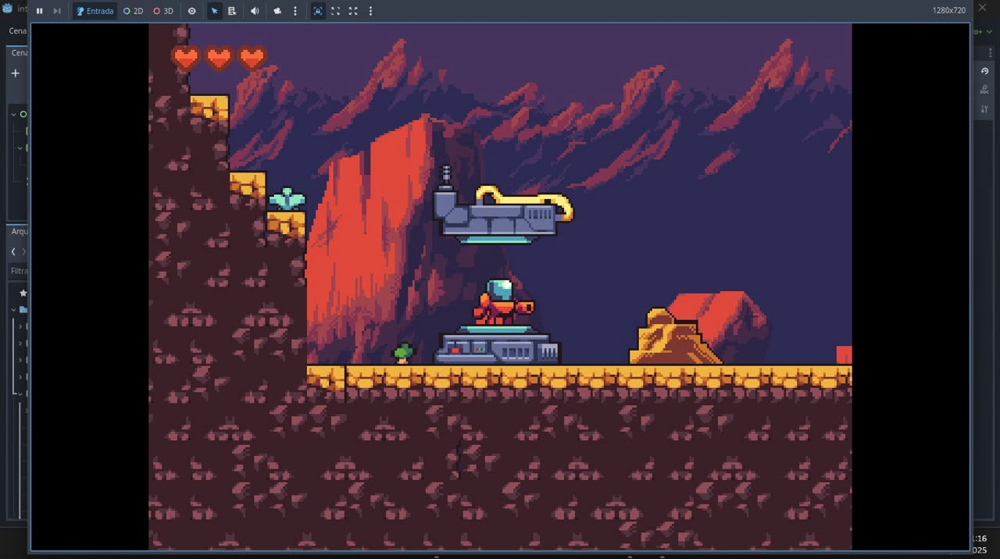

> ls ./projects
Throughout my Computer Science degree, I've worked on several academic projects across different areas,
including web and mobile development, game development, and educational
software. Most of the projects listed here were developed as part of university courses, either
individually or with classmates, and gave me the opportunity to explore different technologies and
programming concepts.
Outside of university projects, I'm currently focusing my studies on backend
development and software engineering. I've been working mainly with
Java and Spring Boot, REST APIs, API consumption and integration, SQL databases,
application architecture, SOLID principles, design patterns, and microservices
.
My goal with personal projects is to progressively move from academic exercises toward building real applications, focusing not only on making things work, but also
on understanding how to design, structure, integrate, and maintain software in a professional
environment.
Each project is linked to its own repo, check it out!
> ls ./projects/portfolio-web-dev
This project is a terminal-inspired personal portfolio built entirely with HTML and CSS, developed as part of my Web Development course. The main goal was to strengthen core web development fundamentals without relying on JavaScript, frameworks, or external UI libraries. The interface recreates the visual style of a command-line terminal, using familiar commands such as nano, ls, and tree to organize and present information about me, my projects, and my technical skills. The portfolio is divided into multiple pages, including a main terminal interface, a detailed README-style introduction, and a projects section. The project focuses on semantic HTML, CSS layouts, reusable styling, navigation between pages, and responsive interface design.

> ls ./projects/enduro-atari-2600
This project is a recreation of Enduro developed in Java, using Swing and AWT (Abstract Window
Toolkit) for graphical rendering. Developed by: Ana Clara and Inácio Araripe
While inspired by the original mechanics, our version introduces a modified scoring system:
The player loses immediately when colliding with another car and collisions with the track walls
cause significant speed reduction
The scoring system is continuous: Points increase proportionally to the player's speed, higher
speed → faster score progression, lower speed → slower score accumulation and the goal is to
achieve the highest possible score
This project was developed based on instructional material focused on building simple games using standard JDK libraries, especially Swing and AWT. The main technical references were Asteroids and Space Invaders. Asteroids served as a strong foundation due to: smooth rendering of multiple on-screen objects, continuous movement logic, use of game loops, handling multiple entities with different sizes, game loop implementation, object modeling, collision handling and class organization.

> ls ./projects/biblioteca-app
An Android application developed to simplify access to library services, providing a practical experience for both users and administrators. The app was created to streamline user interaction with the library collection, allowing users to browse books, manage loans, track returns, and receive important notifications quickly and efficiently. The app allows:
- User registration and authentication
- Browse and view the library collection
- Book loan request and management
- Notifications and alerts
- Quick book search


> ls ./projects/naval-battle-math-relations
An interactive educational game created as part of a college-level discrete mathematics course project, designed to teach mathematical relations through a strategic mission inspired by naval battles.
"Batalha Naval das Relações" (Naval Battle of Relations) is a web-based game developed to help high school students grasp fundamental concepts of mathematical relations through a gamified experience. Set against the backdrop of "Operation Gordian Knot," the game requires players to analyze communication patterns between vessels and identify the mathematical properties of relations in order to progress through the mission's stages.

> ls ./projects/godot-projects
The repository contains three game development projects built with the Godot Engine, but Im gonna put a screenshot of the second one, which I developed alone. Each project was developed to focus on learning and mastering specific game dev and OOP concepts, progressively increasing in complexity and architectural organization. All projects were built using the Godot Engine and GDScript.
Matooine Protocol is a 2D platformer strongly inspired by classic Mario-style games. Although it is more complex than the previous projects, it was fully developed within the scope and technical requirements of the university course. The main goal was to design a complete and fully playable experience while respecting the constraints defined by the discipline.
